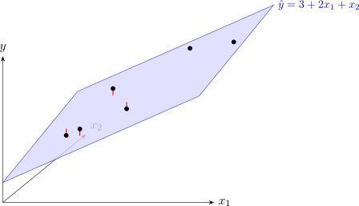

3.3 Least-squares estimation
The least-squares criterion is again the sum of squared errors, now written \[ S(\boldsymbol \beta ) = \sum _{i=1}^n \varepsilon _i^2 = \boldsymbol \varepsilon ^\top \boldsymbol \varepsilon = (\mathbf {y} - \mathbf {X}\boldsymbol \beta )^\top (\mathbf {y} - \mathbf {X}\boldsymbol \beta ) . \]
Theorem 3.3.1 (Least-squares estimator). If \(\mathbf {X}\) has full column rank, \(\mathbf {X}^\top \mathbf {X}\) is invertible and the unique least-squares estimator of \(\boldsymbol \beta \) is \[ \boxed {\;\hat {\boldsymbol \beta } = (\mathbf {X}^\top \mathbf {X})^{-1} \mathbf {X}^\top \mathbf {y}\;} \] It is the solution of the normal equations \(\mathbf {X}^\top \mathbf {X} \hat {\boldsymbol \beta } = \mathbf {X}^\top \mathbf {y}\).
Proof. \(\mathbf {X}^\top \mathbf {X}\) is invertible. If \(\mathbf {X}^\top \mathbf {X}\mathbf {v} = \mathbf {0}\) then \(0 = \mathbf {v}^\top \mathbf {X}^\top \mathbf {X} \mathbf {v} = (\mathbf {Xv})^\top (\mathbf {Xv}) = \sum _i (\mathbf {Xv})_i^2\), so \(\mathbf {Xv} = \mathbf {0}\). Full column rank means this happens only for \(\mathbf {v} = \mathbf {0}\). So the square matrix \(\mathbf {X}^\top \mathbf {X}\) sends no non-zero vector to zero, and is invertible.
The stationary point. Expanding, and using the fact that the \(1\times 1\) matrix \(\boldsymbol \beta ^\top \mathbf {X}^\top \mathbf {y}\) equals its transpose \(\mathbf {y}^\top \mathbf {X}\boldsymbol \beta \), \[ S(\boldsymbol \beta ) = \mathbf {y}^\top \mathbf {y} - 2\boldsymbol \beta ^\top \mathbf {X}^\top \mathbf {y} + \boldsymbol \beta ^\top \mathbf {X}^\top \mathbf {X} \boldsymbol \beta . \] \(\mathbf {X}^\top \mathbf {X}\) is symmetric, so by Lemma 3.1.2 \[ \frac {\partial S}{\partial \boldsymbol \beta } = -2\mathbf {X}^\top \mathbf {y} + 2\mathbf {X}^\top \mathbf {X}\boldsymbol \beta , \] which is zero exactly when \(\mathbf {X}^\top \mathbf {X}\boldsymbol \beta = \mathbf {X}^\top \mathbf {y}\), that is, at \(\hat {\boldsymbol \beta }\).
It is the minimum. For any \(\boldsymbol \beta \), write \(\mathbf {y} - \mathbf {X}\boldsymbol \beta = (\mathbf {y} - \mathbf {X}\hat {\boldsymbol \beta }) + \mathbf {X}(\hat {\boldsymbol \beta } - \boldsymbol \beta )\). The cross term vanishes, because \(\mathbf {X}^\top (\mathbf {y} - \mathbf {X}\hat {\boldsymbol \beta }) = \mathbf {X}^\top \mathbf {y} - \mathbf {X}^\top \mathbf {X}\hat {\boldsymbol \beta } = \mathbf {0}\) by the normal equations. Hence \[ S(\boldsymbol \beta ) = S(\hat {\boldsymbol \beta }) + (\hat {\boldsymbol \beta } - \boldsymbol \beta )^\top \mathbf {X}^\top \mathbf {X} (\hat {\boldsymbol \beta } - \boldsymbol \beta ) . \] The last term is \(\sum _i \bigl (\mathbf {X}(\hat {\boldsymbol \beta } - \boldsymbol \beta )\bigr )_i^2 \ge 0\), and by the first part it is zero only when \(\boldsymbol \beta = \hat {\boldsymbol \beta }\). So \(S(\boldsymbol \beta ) > S(\hat {\boldsymbol \beta })\) for every other \(\boldsymbol \beta \). □
The entries of \(\mathbf {X}^\top \mathbf {X}\) and \(\mathbf {X}^\top \mathbf {y}\) are the familiar sums. With two regressors, \[ \mathbf {X}^\top \mathbf {X} = \begin {bmatrix} n & \sum x_{i1} & \sum x_{i2} \\ \sum x_{i1} & \sum x_{i1}^2 & \sum x_{i1}x_{i2} \\ \sum x_{i2} & \sum x_{i1}x_{i2} & \sum x_{i2}^2 \end {bmatrix}, \qquad \mathbf {X}^\top \mathbf {y} = \begin {bmatrix} \sum y_i \\ \sum x_{i1} y_i \\ \sum x_{i2} y_i \end {bmatrix} . \] So the hand calculation starts, as before, with a table of column totals.
Example 3.3.2 (Simple regression as a special case). With one regressor, \(\mathbf {X}\) has columns \(\mathbf {1}\) and \((x_1, \dots , x_n)^\top \), and \[ \mathbf {X}^\top \mathbf {X} = \begin {bmatrix} n & \sum x_i \\ \sum x_i & \sum x_i^2 \end {bmatrix}, \] \[ \det (\mathbf {X}^\top \mathbf {X}) = n\sum x_i^2 - \left (\sum x_i\right )^2 = nS_{xx} . \] For a \(2 \times 2\) matrix the adjugate swaps the diagonal entries and changes the sign of the others, so \[ (\mathbf {X}^\top \mathbf {X})^{-1} = \frac {1}{nS_{xx}} \begin {bmatrix} \sum x_i^2 & -\sum x_i \\ -\sum x_i & n \end {bmatrix} . \] The second entry of \(\hat {\boldsymbol \beta } = (\mathbf {X}^\top \mathbf {X})^{-1}\mathbf {X}^\top \mathbf {y}\) is \[ \hat \beta _1 = \frac {n\sum x_i y_i - \sum x_i \sum y_i}{nS_{xx}} = \frac {\sum x_i y_i - n\bar x \bar y}{S_{xx}} = \frac {S_{xy}}{S_{xx}} , \] the formula of Theorem 2.2.4. The first entry gives \(\hat \beta _0 = \bar y - \hat \beta _1\bar x\) in the same way (Problem 3.13.3).
Example 3.3.3. Fit the model to the crop data of Example 3.2.1.
Solution. Step 1: the sums.
| \(i\) | \(x_{i1}\) | \(x_{i2}\) | \(y_i\) | \(x_{i1}^2\) | \(x_{i2}^2\) | \(x_{i1}x_{i2}\) | \(x_{i1}y_i\) | \(x_{i2}y_i\) |
| 1 | 1 | 2 | 6 | 1 | 4 | 2 | 6 | 12 |
| 2 | 2 | 1 | 9 | 4 | 1 | 2 | 18 | 9 |
| 3 | 2 | 3 | 11 | 4 | 9 | 6 | 22 | 33 |
| 4 | 3 | 2 | 10 | 9 | 4 | 6 | 30 | 20 |
| 5 | 4 | 4 | 15 | 16 | 16 | 16 | 60 | 60 |
| 6 | 6 | 3 | 18 | 36 | 9 | 18 | 108 | 54 |
| \(\sum \) | 18 | 15 | 69 | 70 | 43 | 50 | 244 | 188 |
so \[ \mathbf {X}^\top \mathbf {X} = \begin {bmatrix} 6 & 18 & 15 \\ 18 & 70 & 50 \\ 15 & 50 & 43 \end {bmatrix}, \qquad \mathbf {X}^\top \mathbf {y} = \begin {bmatrix} 69 \\ 244 \\ 188 \end {bmatrix} . \] Step 2: the cofactors. Deleting row \(i\) and column \(j\) and taking the determinant of what is left: \begin {align*} C_{11} &= +(70 \cdot 43 - 50 \cdot 50) = 3010 - 2500 = 510, \\ C_{12} &= -(18 \cdot 43 - 50 \cdot 15) = -(774 - 750) = -24, \\ C_{13} &= +(18 \cdot 50 - 70 \cdot 15) = 900 - 1050 = -150, \\ C_{22} &= +(6 \cdot 43 - 15 \cdot 15) = 258 - 225 = 33, \\ C_{23} &= -(6 \cdot 50 - 18 \cdot 15) = -(300 - 270) = -30, \\ C_{33} &= +(6 \cdot 70 - 18 \cdot 18) = 420 - 324 = 96 , \end {align*}
and by symmetry \(C_{21} = C_{12}\), \(C_{31} = C_{13}\), \(C_{32} = C_{23}\).
Step 3: the determinant, expanding along the first row: \[ \det (\mathbf {X}^\top \mathbf {X}) = 6(510) + 18(-24) + 15(-150) = 3060 - 432 - 2250 = 378 . \] Step 4: the inverse. \[ (\mathbf {X}^\top \mathbf {X})^{-1} = \frac {1}{378} \begin {bmatrix} 510 & -24 & -150 \\ -24 & 33 & -30 \\ -150 & -30 & 96 \end {bmatrix} . \] A check: the first row of \(\mathbf {X}^\top \mathbf {X}\) times the first column of the adjugate should give \(378\), and times the second column \(0\): \(6(510) + 18(-24) + 15(-150) = 378\) and \(6(-24) + 18(33) + 15(-30) = -144 + 594 - 450 = 0\).
Step 5: the estimates. \[ \hat {\boldsymbol \beta } = \frac {1}{378} \begin {bmatrix} 510(69) - 24(244) - 150(188) \\ -24(69) + 33(244) - 30(188) \\ -150(69) - 30(244) + 96(188) \end {bmatrix} = \frac {1}{378} \begin {bmatrix} 1134 \\ 756 \\ 378 \end {bmatrix} = \begin {bmatrix} 3 \\ 2 \\ 1 \end {bmatrix} . \] The fitted model is \[ \hat y = 3 + 2x_1 + x_2 . \] Interpretation. At a fixed rainfall, each extra 100 kg of fertiliser per hectare raises the mean yield by \(2\) tonnes per hectare; at a fixed fertiliser rate, each extra 100 mm of rain raises it by \(1\) tonne per hectare.

Questions on this section
Stuck on something here? Ask below and it stays attached to this topic.